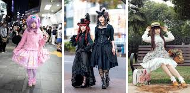

Tipos de Cultura Japonesa
La cultura japonesa es una rica mezcla de elementos tradicionales y modernos. Se manifiesta en diversas formas, incluyendo el arte, la literatura, la música, el cine, la gastronomía y las costumbres sociales. La tradición japonesa, con raíces en el sintoísmo y el budismo, coexiste con la cultura popular contemporánea, incluyendo el anime, el manga y los videojuegos. Tipos de Cultura Japonesa: Cultura Tradicional: Artes Escénicas: Kabuki, Noh, Kyogen y Bunraku son formas de teatro clásico que han perdurado a través del tiempo. Artes Visuales: Ikebana (arreglo floral), la ceremonia del té, y el arte de la caligrafía son manifestaciones artísticas con profundo significado cultural. Religión y Espiritualidad: El sintoísmo y el budismo son las religiones principales, aunque a menudo se practican de forma sincrética, integrando elementos de ambas. Costumbres y Etiqueta: La cortesía, el respeto, la modestia, y la importancia de la armonía social (wa) son valores centrales en la cultura japonesa. Gastronomía: La cocina japonesa es diversa y valorada a nivel mundial, con platos como el sushi, el ramen y el tempura. goit
Comparación entre cultura tradicional y moderna
| Tipo de cultura | Ejemplo | Imagen |
|---|---|---|
| Tradicional | Kimono |  |
| Moderna | Moda Harajuku |  |
Elementos destacados de cada tipo
Cultura Tradicional
- Ikebana (arte floral)
- Ceremonia del té
- Artes marciales
Cultura Moderna
- Anime y manga
- Tecnología avanzada
- Videojuegos